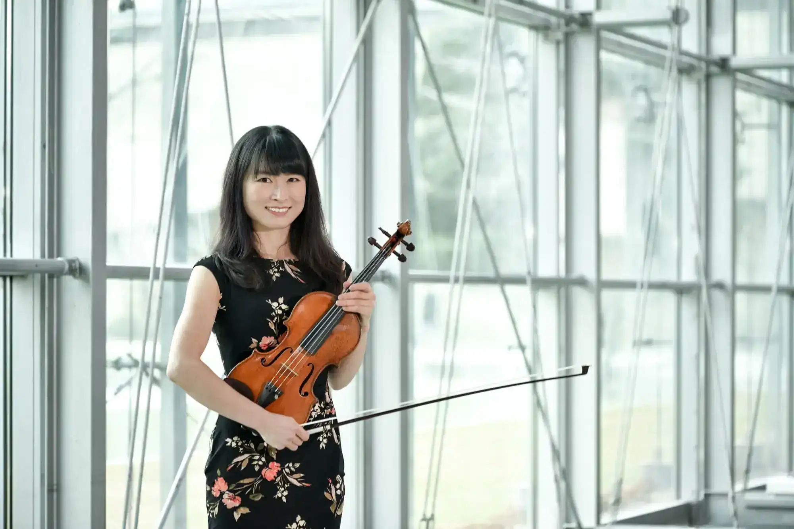
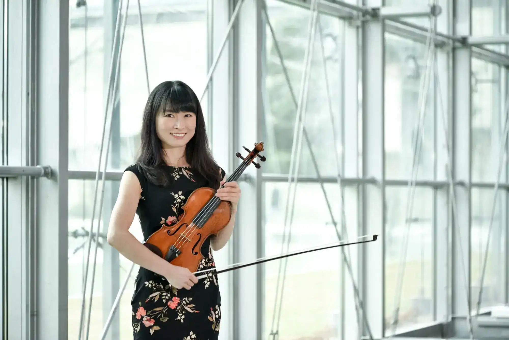
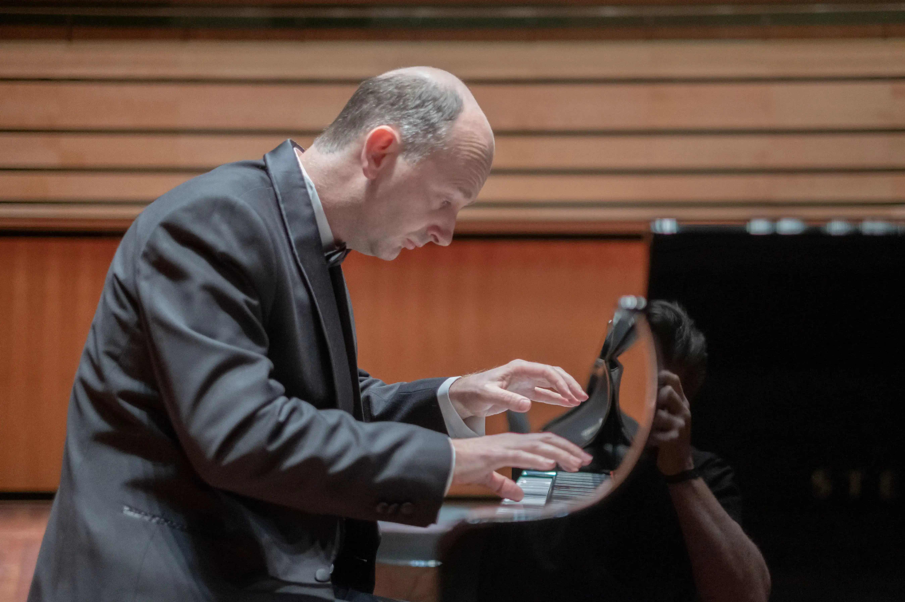
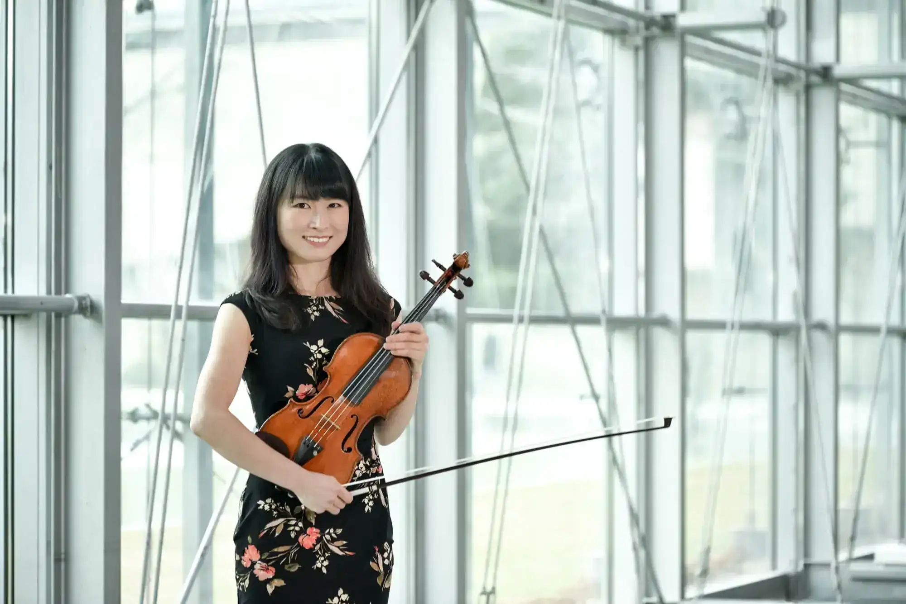
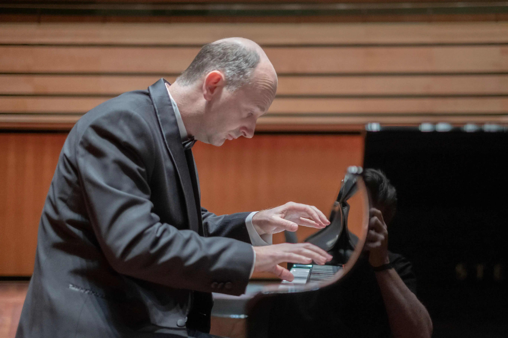
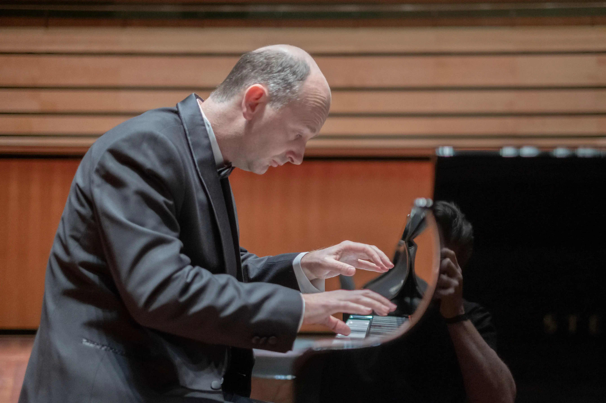
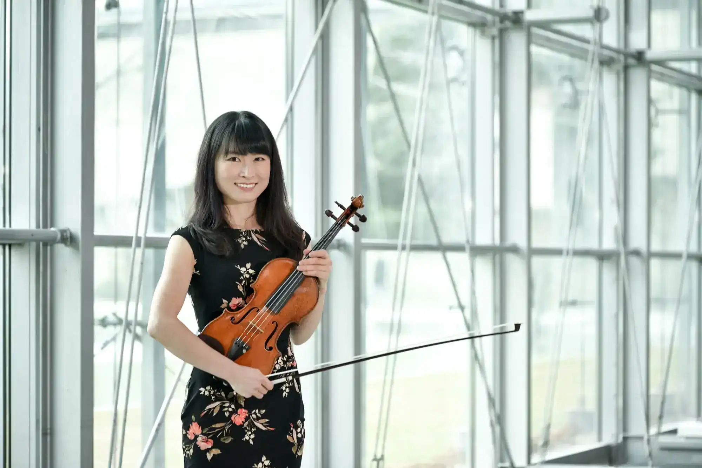
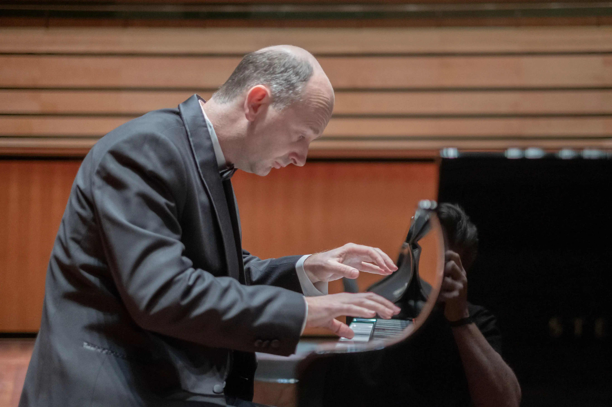

 






Music Orestes was founded by two enthusiastic colleagues who work at the Liszt Ferenc Academy of Music’s International Affairs Department with the aim to introduce and bring talented and well-known Hungarian musicians to Japan. The Liszt Ferenc Academy of Music has a long and rich history in Japan and with Japanese musical institutions. We feel that young students can benefit immensely by getting to know the Hungarian musical traditions and techniques that make them highly sought after all around the world.
The professors at the Liszt Ferenc Academy of Music are all highly experienced and enthusiastic professors who always prioritize the development of their students. By organizing 4-5 days long masterclasses we hope to achieve that a significant number of young students will be able to learn from our professors at a reasonable price. The combination of masterclasses and a closing concert gives the students the opportunity to showcase their newly acquired knowledge and skills in front of a live audience. During the event we also offer consultation and counseling for students who would be interested in coming to Hungary and study at the Liszt Ferenc Academy of Music (applying for scholarship, entrance exam procedure and requirements, etc.)
He graduated at the Ferenc Liszt Academy of Music in 1998, where his teacher was Prof. György Nádor. He got DLA degree in 2007. He is associate professor at the Liszt Music Academy, Budapest, teaching piano as a main subject. He is also the head of the Piano Department at the University of Miskolc (Béla Bartók Faculty of Music) from 2008.Ł

Haruka Nagao earned her bachelorʼs, masterʼs and doctoral degrees at the Tokyo University of the Arts, and also studied at the Graz University of Music and Performing Arts, and she has completed her viola master's program at the Liszt Music Academy, in Budapest.
Csaba Pálfi is a Hungarian clarinetist celebrated for his versatility as a soloist, chamber musician, and orchestral performer. Based in Budapest, he is a co-founder of the Weiner Ensemble and a dedicated member of the Hungarian State Opera Orchestra.

Ditta Rohmann is a highly versatile cellist renowned for captivating performances ranging from solo recitals in prestigious concert halls to collaborations with world-music ensembles, dance companies, and theatrical productions.
He graduated at the Ferenc Liszt Academy of Music in 1998, where his teacher was Prof. György Nádor. He got DLA degree in 2007. He is associate professor at the Liszt Music Academy, Budapest, teaching piano as a main subject. He is also the head of the Piano Department at the University of Miskolc (Béla Bartók Faculty of Music) from 2008.Ł
Haruka Nagao earned her bachelorʼs, masterʼs and doctoral degrees at the Tokyo University of the Arts, and also studied at the Graz University of Music and Performing Arts, and she has completed her viola master's program at the Liszt Music Academy, in Budapest.
Csaba Pálfi is a Hungarian clarinetist celebrated for his versatility as a soloist, chamber musician, and orchestral performer. Based in Budapest, he is a co-founder of the Weiner Ensemble and a dedicated member of the Hungarian State Opera Orchestra.
Ditta Rohmann is a highly versatile cellist renowned for captivating performances ranging from solo recitals in prestigious concert halls to collaborations with world-music ensembles, dance companies, and theatrical productions.